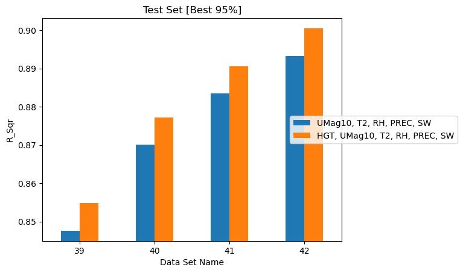

Physical Quantities¶
Which atmospheric variables actually carry the fuel moisture signal? Every quantity added multiplies through the history dimension — one more QoI at 8 historical times is 8 more features — so dropping an uninformative variable is worth real compute.
These studies use datasets 39–42, which differ only in spatial sample size
(1,000 to 4,000 grid points at 2,000 reference times), with
\(t_{max\_history} = 32\) h and \(t_{history} = 4\) h. Varying the feature set
while holding the data fixed is exactly what
qois_for_training
is for.
Effect of elevation¶
Elevation (HGT) is the only feature that does not vary with time. Each dataset
was trained with and without it.
| Dataset | Grid points | Without HGT |
With HGT |
Gain |
|---|---|---|---|---|
| 39 | 1,000 | 0.8476 | 0.8549 | +0.0073 |
| 40 | 2,000 | 0.8701 | 0.8772 | +0.0071 |
| 41 | 3,000 | 0.8835 | 0.8906 | +0.0071 |
| 42 | 4,000 | 0.8933 | 0.9005 | +0.0072 |
Elevation gives a small but remarkably consistent benefit — almost exactly +0.007 in R² regardless of dataset size. The stability of that number across four independent datasets is itself evidence the effect is real rather than noise.

Correlation between ground truth and predicted FM for datasets trained with and without elevation.
At one feature out of 41, elevation is cheap. Keep it.
Effect of precipitation and shortwave flux¶
Results not yet in the manuscript
This section is a placeholder in the manuscript; the numbers come from the simulation output.
Precipitation (PREC) and downward shortwave flux (SW) were dropped
individually and together, from a base set of HGT, UMag10, T2, RH.
| Features | Dataset 39 | Dataset 40 | Dataset 41 | Dataset 42 |
|---|---|---|---|---|
HGT, UMag10, T2, RH, PREC, SW |
0.8549 | 0.8772 | 0.8906 | 0.9005 |
HGT, UMag10, T2, RH, SW (no PREC) |
0.8459 | 0.8695 | 0.8828 | 0.8933 |
HGT, UMag10, T2, RH, PREC (no SW) |
0.8236 | 0.8412 | 0.8540 | 0.8630 |
HGT, UMag10, T2, RH (neither) |
0.8094 | 0.8291 | 0.8399 | 0.8494 |
On dataset 42, relative to the full set:
- Dropping
PRECcosts 0.0072 - Dropping
SWcosts 0.0375 — over five times as much - Dropping both costs 0.0511
Shortwave downward flux is far more important than precipitation. The
ordering is identical on all four datasets, and the same pattern reappears
independently in the maximum history study,
where dropping SW cost 0.0369 and dropping PREC cost 0.0079 on a completely
different set of datasets.
The physical reading is straightforward: solar flux drives the drying of fine fuels directly and operates continuously, whereas precipitation is intermittent and mostly zero in California outside the winter months. A variable that is zero in the majority of samples carries little information for most predictions, however decisive it is when it does occur.
Tip
If feature count must be reduced, PREC is the cheapest thing to drop. SW
is not.
Temperature, humidity, and vapor pressure deficit¶
Results not yet in the manuscript
This section is a placeholder in the manuscript; the numbers come from the simulation output.
Vapor pressure deficit combines temperature and relative humidity into one
variable (see Step 2). If VPD
could replace both, the feature count would drop by one QoI — 8 features at the
baseline history settings. Six combinations were tested against a base set of
HGT, UMag10, PREC, SW.
| Additional features | Dataset 39 | Dataset 40 | Dataset 41 | Dataset 42 |
|---|---|---|---|---|
T2, RH (baseline) |
0.8549 | 0.8772 | 0.8906 | 0.9005 |
T2, VPD |
0.8499 | 0.8714 | 0.8851 | 0.8953 |
RH, VPD |
0.8459 | 0.8670 | 0.8808 | 0.8905 |
RH alone |
0.8384 | 0.8601 | 0.8751 | 0.8843 |
VPD alone |
0.8364 | 0.8592 | 0.8740 | 0.8842 |
T2 alone |
0.8265 | 0.8540 | 0.8726 | 0.8840 |
Three findings, all consistent across the four datasets:
VPD does not replace temperature and humidity. Substituting VPD for both
costs 0.0163 on dataset 42 (0.9005 → 0.8842). The combination of T2 and RH
outperforms every alternative tested.
VPD alone is no better than either input alone. VPD (0.8842), RH
(0.8843) and T2 (0.8840) are within 0.0003 of each other on dataset 42 — an
effective three-way tie. Whatever VPD gains by combining the two variables, it
loses by discarding their independent information.
The best substitution keeps temperature. T2, VPD (0.8953) recovers most of
the baseline and clearly beats RH, VPD (0.8905), suggesting the residual signal
in T2 that VPD does not capture is more valuable than the equivalent in RH.
Is the substitution worth it?¶
| Option | R² (dataset 42) | QoIs | Features at baseline history |
|---|---|---|---|
T2, RH |
0.9005 | 6 | 49 |
T2, VPD |
0.8953 | 6 | 49 |
VPD alone |
0.8842 | 5 | 41 |
Replacing T2, RH with VPD alone saves 8 features — about 16% — for 1.6
percentage points of R². Whether that trade is worth taking depends on the
application, but the motivating hope that VPD would be a free consolidation is
not supported by these runs.
Summary¶
| Variable | Verdict |
|---|---|
SW (shortwave flux) |
Important — dropping costs ~0.037 |
T2 + RH together |
Important — best available pairing |
HGT (elevation) |
Small but consistent gain, ~0.007, for one feature |
PREC (precipitation) |
Marginal — dropping costs ~0.007 |
VPD |
A viable economy, not a free win |
The recommended full feature set is
HGT, UMag10, T2, RH, PREC, SW, which is what the highest-scoring configuration
in every study on this page uses.
Not yet assessed¶
Terrain ruggedness appears in the manuscript outline as a candidate feature but has no simulation results. Given that elevation alone contributes a small, stable gain, a ruggedness measure derived from the elevation field is a reasonable next test.